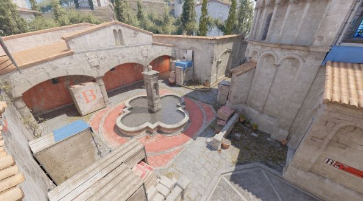

RUSTICOS LE GANO 2-1 A FURIA EN UN INFERNO MUY COMPLICADO
Rusticos jugó un partido amistoso contra Furia donde todo se definió en el mapa Inferno, mapa que se le da muy bien a Furia, pero Rusticos lo pudo neutralizar y ganarle.
Las noticias del mejor de Argentina
Rusticos jugó un partido amistoso contra Furia donde todo se definió en el mapa Inferno, mapa que se le da muy bien a Furia, pero Rusticos lo pudo neutralizar y ganarle.
Luke últimamente está mostrando un nivel muy bueno en el equipo y eso hace que se hable de él en toda la región, por eso hicimos esta noticia dedicada para él.